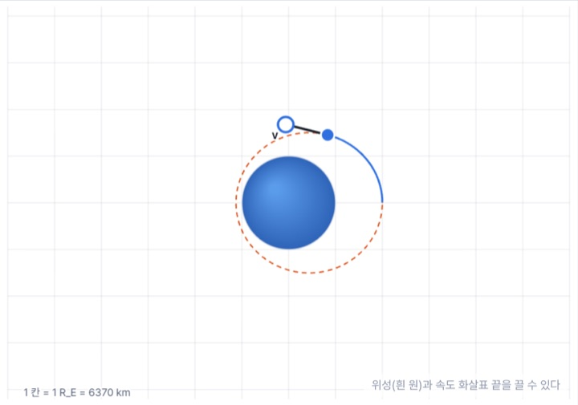
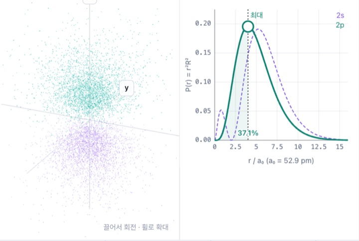
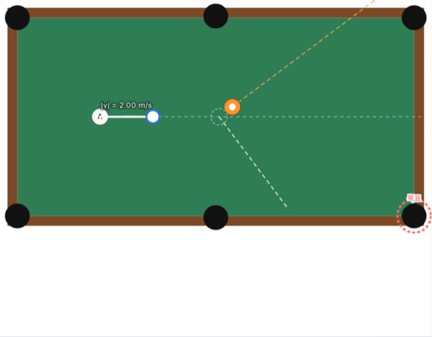
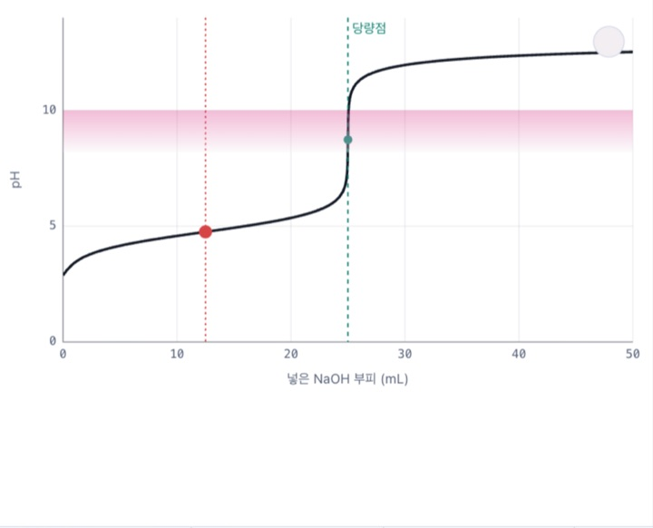
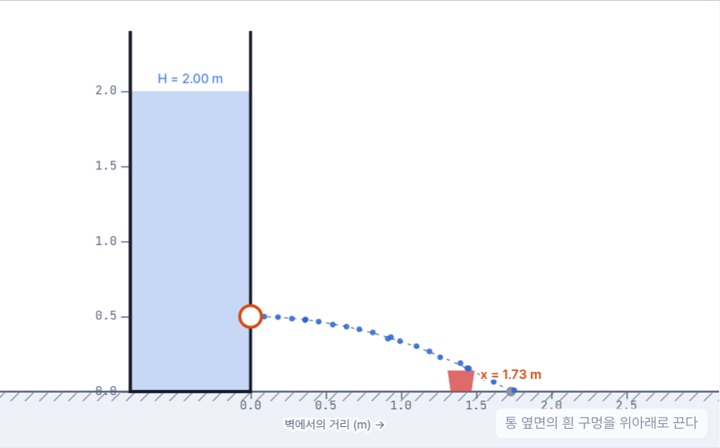
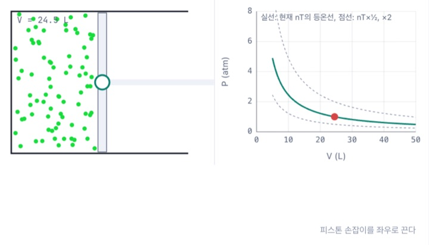

원자와 몰에서 출발해 결합·분자 구조, 기체와 용액, 열역학, 속도론, 평형, 산·염기, 전기화학, 핵화학까지 — 대학 1학년 일반화학 전 과정을 수식과 시뮬레이터로 직접 실험하며 익히는 인터랙티브 교과서.
SciBook · Interactive Science Library
대학 과목 하나,
교과서 한 권.
강의실에서 배우는 과학을 읽고, 수식으로 따라가고, 시뮬레이터로 직접 실험하며 이해합니다. 화학·물리학·공학 역학의 기초 과목을 한 서가에 모았습니다.
대학 기초 과학 교과서시뮬레이터 · 예제 · 자동 채점 문제
운동과 힘, 에너지와 운동량, 회전, 진동과 파동, 열, 전기와 자기, 빛, 상대성까지 — 미적분 기반 대학 1학년 일반물리 전 과정을 끌고, 던지고, 부딪쳐 보며 익히는 인터랙티브 교과서.
화학예정유기화학Organic ChemistryOC
구조와 결합, 입체화학, 반응 메커니즘(치환·제거·첨가), 작용기별 반응, 분광학 — 화살표로 전자를 따라간다.
공학 역학예정정역학StaticsST
힘과 모멘트, 자유 물체도, 강체 평형, 트러스·프레임, 마찰, 도심과 관성 모멘트.
공학 역학예정동역학DynamicsDY
질점과 강체의 운동학·운동역학, 일–에너지, 충격–운동량, 상대 운동, 진동.
공학 역학예정유체역학Fluid MechanicsFM
유체 정역학, 베르누이 식, 검사 체적 해석, 차원 해석, 관 유동과 경계층.
조건에 맞는 교과서가 없습니다. 다른 검색어나 분야를 선택해 보세요.
직접 해보기
궁금한 장면에서 시작해 보세요
질문 하나를 골라 시뮬레이터를 움직여 보세요. 각 실험은 해당 교과서의 그 장면으로 바로 이어집니다.

일반물리학 · 12 중력위성을 얼마나 빠르게 던지면 떨어지지 않을까?위성과 속도 벡터를 끌어 원·타원 궤도와 탈출 궤도를 직접 만들어 봅니다.궤도 실험실 →
일반화학 · 07 원자의 전자 구조전자는 원자 속 어디쯤에 있을까?오비탈의 점구름을 돌려 보고 방사 분포 함수와 나란히 비교합니다.수소 원자 오비탈 →
일반물리학 · 08 운동량부딪친 당구공은 어느 쪽으로 갈라질까?질량비와 반발 계수를 바꾸며 2차원 충돌로 목표 포켓을 노립니다.2차원 충돌 당구대 →
일반화학 · 16 수용액 평형염기 한 방울에 pH가 왜 갑자기 치솟을까?강산·약산·다양성자산을 적정하며 당량점과 알맞은 지시약을 찾습니다.적정 곡선 실험실 →
일반물리학 · 14 유체 역학물통 구멍에서 나온 물줄기는 어디에 떨어질까?물 높이를 정하고 토리첼리 정리로 바닥의 컵을 맞혀 봅니다.물통의 구멍 →
일반화학 · 05 기체피스톤을 누르면 기체 입자는 무엇이 달라질까?P, V, T, n을 바꾸며 입자의 움직임과 이상 기체 법칙을 함께 봅니다.피스톤 속 기체 →모든 교과서에 공통으로
읽는 방법은 어느 책에서나 같습니다
하나의 교과서 엔진 위에 과목별 콘텐츠를 얹었습니다.
강의 범위 그대로대학 강의 계획서의 표준 목차를 따릅니다. 장 번호와 주차가 맞물리도록 구성해 수업 교재로 그대로 쓸 수 있습니다.
이론 · 수식 · 시각화정의와 식에는 번호가 붙고, 모든 그림은 다크 모드에서도 읽히는 벡터 그래픽입니다.
직접 실험하는 시뮬레이터조건을 바꾸면 그래프와 입자 모형이 즉시 반응합니다. 링크로 특정 실험을 바로 공유할 수 있습니다.
예제와 자동 채점 문제예제는 전략–풀이–검토로, 연습문제는 숫자를 입력하면 바로 채점하고 진도를 기억합니다.